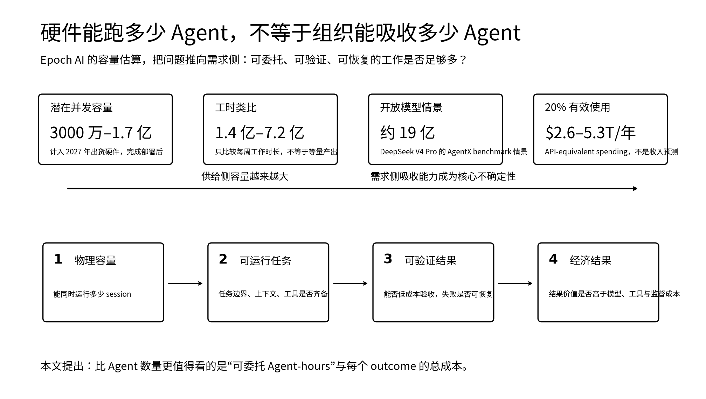

"
Agent 数量 可能先变得便宜，真正稀缺的会是 可委托、可验证的工作 。
—— NTLx
Epoch AI 在 10 月 2 日发了一份很容易让人记住大数字的报告：按它对 HBM 供给和推理承载能力的估算，计入 2027 年出货、并在之后完成部署的硬件后，潜在并发规模大约可以到 3000 万至 1.7 亿个 frontier-model Agent。把机器一周可以持续运行的时间折成 40 小时工作周，对应的工时甚至可以拿来和 1.4 亿至 7.2 亿名全职员工比较。
看到这里，很自然会想到“AI 劳动力人口”。我读完反而觉得，这个类比应该尽快停下来。
Epoch 自己也写得很清楚：这里比较的是 working hours，不是相同质量的产出，更不是已经存在的就业替代。它算出来的首先是一种机房承载力。问题在后面：如果并发 Agent 真的多到不再稀缺，我们有没有那么多工作可以放心交给它们？

文章核心信息图：从硬件潜在并发容量到可委托 Agent-hours，再到 outcome 总成本
📌 本文看点
01
容量不是劳动力
02
瓶颈转向需求侧
03
看 outcome 总成本
CAPACITY
这份报告把 HBM 当作不同 AI 加速器之间的一种共同尺度。内存要放模型权重和 KV cache，带宽又会限制 decode 速度，所以它直接影响一个系统能同时维持多少长上下文 Agent session。
对闭源模型，Epoch 用 agent-hour 的 API 支出、GPU 租赁价格和 serving cost 假设反推单位硬件可以承载多少 session；对开放模型，则直接使用 SemiAnalysis AgentX 的并发 benchmark。这里的 Agent session 还包括工具调用和等待工具返回的时间，并不是一块 GPU 上始终有一个模型连续吐 token。
因此，3000 万至 1.7 亿更像“潜在同时在线会话数”，不是未来社会里真的会出现这么多数字员工。这个范围还假设相应硬件已经完成部署，并且全部分配给这类 workload。数据中心没建好、电力没接上、模型效率继续变化，都会让现实值偏离这个容量模型。
并发 Agent 容量增加后，城市级数字工作环境中同时活跃的多个 Agent 会话
报告给出的开放模型情景更夸张：套用 DeepSeek V4 Pro 的 AgentX benchmark，同一批潜在硬件供给可以得到约 19 亿个并发 Agent。这个数字对我最大的作用不是让我相信“十九亿个 Agent 快来了”，而是说明 Agent 数量本身可能很快失去解释力。模型越便宜、serving 越高效，同一份硬件能塞进去的 session 就越多。
DEMAND
Epoch 后半篇其实一直在问：这么多 capacity，谁来用？
它做了一个相对克制的情景，只按中央硬件假设的 20% effective use 计算。即便如此，按参考 API 价格折算，计入 2027 年硬件后也对应每年约 2.6 万亿至 5.3 万亿美元的 API-equivalent spending。这个数不是厂商必须赚到的收入，也不是市场规模预测，只是在说明：要让潜在供给保持忙碌，需要非常大的 Agent 活动需求。
问题还会被效率进步进一步放大。Epoch 另一份研究估算，从 2023 年起，达到给定 AI 性能水平的价格平均每季度下降约 47%。便宜当然会创造新需求，但每项任务需要的算力也在下降。于是供需两边在同时移动：Agent 越便宜，人们可能越愿意让它多做事；可同样一件事，也可能只需要更少的硬件。
这就是我觉得这份报告最值得看的地方。它没有给出“算力一定过剩”的结论，而是把不确定性推到了需求端：工作会不会增长得足够快，足够复杂，足够长时间地占用这些 Agent？
对企业来说，这个宏观问题会变得更具体。不是“还有多少 GPU”，而是“还有多少工作能被改造成 Agent 可以独立推进的任务”。
DELEGATION
我会把这类容量分成两种。
第一种是物理 Agent-hours：模型和硬件允许你运行多久、并发多少。这正是 Epoch 在估算的东西。
第二种才是组织实际能消费的 Agent-hours。它至少要满足几个条件：任务边界说得清，Agent 拿得到需要的上下文和工具，权限可以限制在本次任务里，结果有办法验证，出错后也知道怎么停、怎么恢复。否则，多出来的 Agent-hour 只是把更多待检查结果推到人面前。
当 Agent 供给不再稀缺，组织仍需要把任务、上下文、权限与监督能力接入工作流
这和我最近写的《Agent 共用底座后，权限仍要跟着每次任务走》（https://ntlx.github.io/articles/agent-shared-infrastructure-task-scoped-permissions）是同一个问题的另一面。共享基础设施可以让 Agent 更容易扩张，但身份、权限和 trace 没有随着任务一起走，规模化只会把不确定性放大。
《一个愿意替你修故障的 Agent，先得学会何时停手》（https://ntlx.github.io/articles/agent-proactive-action-user-control）里我关心的是主动 Agent 什么时候需要把决定交还给人；《按下停止键后，Agent 的工作该怎样收住》（https://ntlx.github.io/articles/agent-safety-control-plane）继续追问暂停之后在途任务怎么办。把这些问题放回 Epoch 的大数字里，会发现它们其实都决定同一件事：组织到底能吸收多少自主执行，而不把监督成本同步放大。
所以我更愿意把“可委托 Agent-hours”当成一个分析单位。它不是标准 KPI，只是一个比 Agent 数量更接近现实的问法：这一个小时的机器工作，是否真的可以从人手里拿走，而不是换一种形式重新回到人的审批队列？
OUTCOME
当 Agent 变便宜以后，token cost 和 agent-hour cost 仍然重要，但它们会越来越像云服务器的单价：能帮你做预算，却不直接说明业务价值。
同样跑一批 Agent-hours，一套系统可能完成大量可以自动验收的代码修改；另一套系统可能产生一批需要专家逐份判断的建议。底层消耗相近，组织拿到的生产力完全不同。
我更想看的指标会往 outcome 靠近：一次任务真正完成后创造了什么结果，花了多少模型与工具成本，占用了多少人的复核时间，失败时付出了多少恢复成本，又产生了多少无法撤回的外部影响。供应链这类场景尤其明显。我在《供应链 Agent 开始执行后，权限边界得先写进流程》（https://ntlx.github.io/articles/supply-chain-agents-execution-boundaries）里写过，能给出建议和能把动作写回业务系统是两种成熟度。Agent 数量增加，并不会自动跨过这条线。
如果以后硬件真的可以容纳海量 Agent，我猜很多企业会经历一个很熟悉的过程：先发现模型调用不再是最贵的东西，然后发现上下文、工具接入、验证、权限和责任交接开始占据更多工程成本。最后，容量规划也会从“我们还能开多少 Agent”变成“我们还能稳定闭环多少任务”。
Epoch 这份报告表面上在数 Agent，读到最后更像是在数未来基础设施可能提供的空座位。芯片厂和模型公司正在押注这些座位会有人坐满。对准备使用 Agent 的组织来说，更早要做的事可能是把工作本身改造成可以坐进去的形状。
REFERENCES
01. Epoch AI：How many AI agents could run on the AI chips shipped through 2027?（https://epoch.ai/publications/estimating-the-agent-population）
02. Epoch AI：compute-to-agents 复现仓库（https://github.com/epoch-research/compute-to-agents）
03. SemiAnalysis InferenceX / AgentX（https://inferencex.semianalysis.com/）
04. TraceLab：公开 coding-agent trace 数据集与工具（https://github.com/uw-syfi/TraceLab）
05. Epoch AI：The plunging price of thought（https://epoch.ai/publications/the-plunging-price-of-thought）
06. 《Agent 共用底座后，权限仍要跟着每次任务走》（https://ntlx.github.io/articles/agent-shared-infrastructure-task-scoped-permissions）
07. 《一个愿意替你修故障的 Agent，先得学会何时停手》（https://ntlx.github.io/articles/agent-proactive-action-user-control）
08. 《按下停止键后，Agent 的工作该怎样收住》（https://ntlx.github.io/articles/agent-safety-control-plane）
09. 《供应链 Agent 开始执行后，权限边界得先写进流程》（https://ntlx.github.io/articles/supply-chain-agents-execution-boundaries）
我是 NTLx，持续记录 AI、工程与数字化实践。
如果你觉得今天这篇有收获，欢迎点赞、在看、转发三连，我们下篇见。